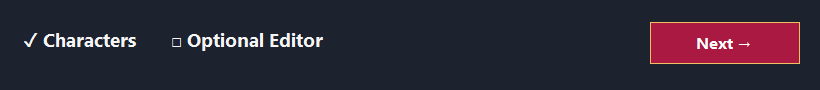
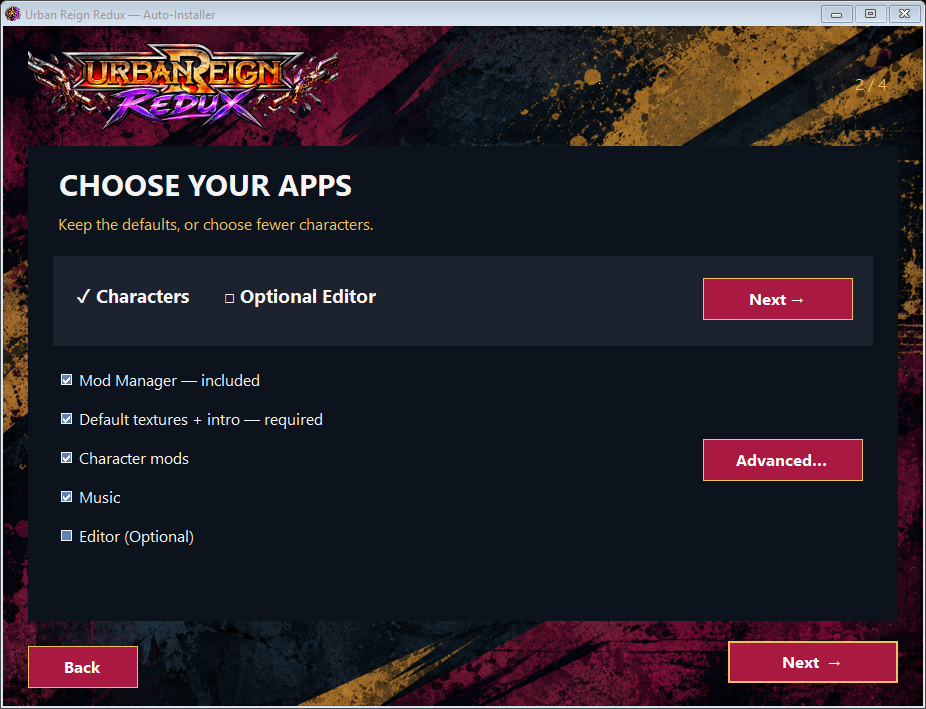
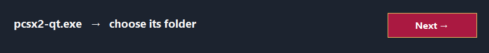
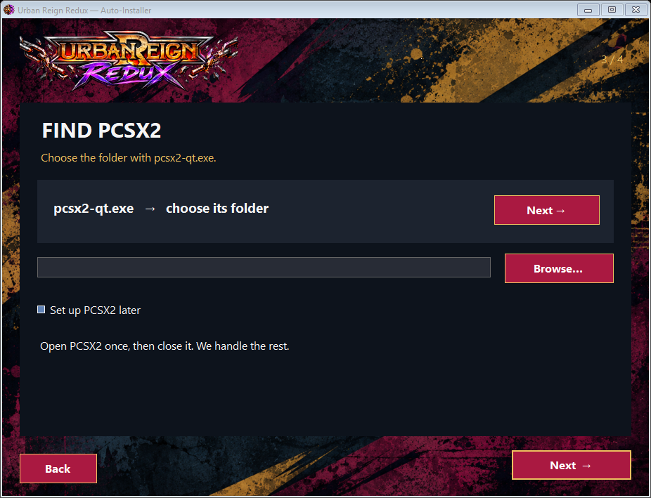
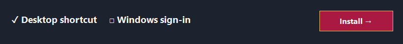
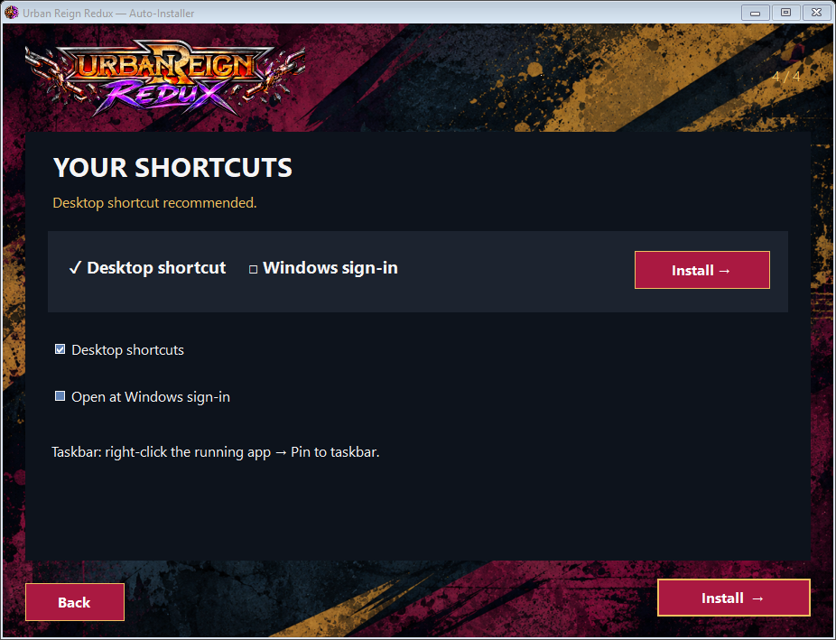
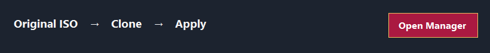

Install. Build. Play.
↓ DOWNLOAD AUTO-INSTALLER1. Choose your downloads

Keep the defaults to play. Advanced lets you choose characters. Default textures and intro are required.
Show screen

2. Choose PCSX2

Browse to your PCSX2 folder. Open PCSX2 once, then close it.
Show screen

3. Install

Wait for setup to finish.
Show screen

4. Build your game

Open Mod Manager. Choose your original ISO. Keep Clone and Redux 0.2 Collection selected. Click Apply selected mods.
Show Mod Manager

Open the new -modded.iso in PCSX2. Use a fresh boot.
Taskbar: right-click the running app → Pin to taskbar.
PCSX2 and a game ISO are not included. PCSX2 2.7.403 with ExtraMemory support is the tested version.